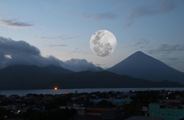

Quarta-feira, 09 de Março de 2022

A noite é tradicionalmente a hora da lua brilhar, depois que o sol se põe e não
compete. Mas a lua às vezes pode ser visível durante o dia, mesmo quando o sol
está alto - isso porque a lua e as estrelas estão sempre em algum lugar...
Terça-feira, 08 de Março de 2022